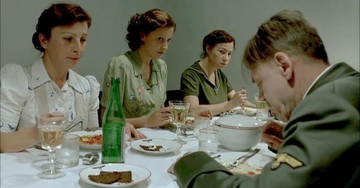
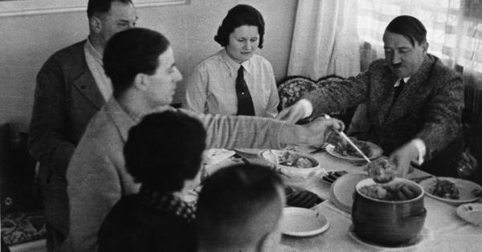

RUANGAN makan tertutup di Führerbunker pada siang 30 April 1945 begitu hening. Hanya bunyi dentingan piring tersentuh garpu yang meramaikan suasana makan siang di masa mencekam itu. Diktator Jerman-Nazi Adolf Hitler (diperankan Bruno Ganz) menyantap pasta ravioli dengan saus tomat di hadapannya dengan lahap. Beberapa jam setelah pernikahannya dengan Eva Braun itu, Hitler makan siang ditemani koki pribadinya, Constanze Manziarly, yang duduk di hadapannya. Dua sekretaris Hitler, Traudl Junge dan Gerda Christian, turut menemani di samping Manziarly. Setelah menghabiskan kepingan ravioli terakhirnya, Hitler memecah keheningan dengan memuji Manziarly. “Terima kasih, makanan ini lezat, Nyonya Manziarly,” ujar Hitler. Setelah membersihkan bibirnya dengan lap makan, Hitler pun bangkit dari kursi dan menyalami ketiganya untuk memberi salam perpisahan.
Adolf Hitler dalam film Downfall
Adegan di akhir film biopik Downfall (2004) itu menggambarkan saat-saat Hitler jelang bunuh diri bareng istri yang baru dinikahinya beberapa jam setelah makan siang itu. “Eva Braun tidak ikut (makan siang), kemungkinan dia sudah tak punya selera makan. Spaghetti dengan saus (tomat) ringan jadi hidangan terakhir Hitler yang dimakan dengan suasana sunyi. Setelah menghabiskan makanannya ia berterimakasih pada sang koki dan berbicara dengan intonasi suara yang nyaris tak terdengar: ‘waktunya telah tiba; semua sudah usai’,” tulis David McCormack dalam Year Zero: Berlin 1945.
Terlepas dari perbedaan fakta dan penggambaran film itu –di mana hidangan terakhir Hitler ukanlah pasta ravioli, melainkan spaghetti–, Adegan itu turut menggambarkan bahwa Hitler tetap seorang vegetarian sampai akhir hayatnya. Padahal, di masa muda hingga menjelang Perang Dunia II, Hitler gemar melahap beragam olahan daging.
Adolf Hitler (kanan) dalam sebuah jamuan, di mana ia mulai menghindari makan daging
Hitler dikenal sebagai sosok yang punya gaya hidup sehat. Ia bukan perokok dan pecandu minuman keras. Hanya sampanye, minuman berkadar alkohol rendah, yang sesekali ia minum di acara-acara khusus. Itu pun tak pernah sampai habis. Dalam momen-momen sarapan, makan siang, dan makan malam, Hitler memilih air putih di gelasnya ketimbang anggur atau miras. Itu dilakukannya sejak Hitler masih jadi pemakan daging. Kala masih mendaki karier politiknya, Hitler masih menggemari kuliner seperti kaviar, burung dara muda, dan aneka jenis sosis khas Bavaria. Namun di antara beragam kuliner, favoritnya tetaplah makanan yang berasal dari negeri kelahirannya, Austria, yakni leberknödel atau leberklösse dalam dialek Jerman, yakni hidangan berupa pangsit isi hati sapi.